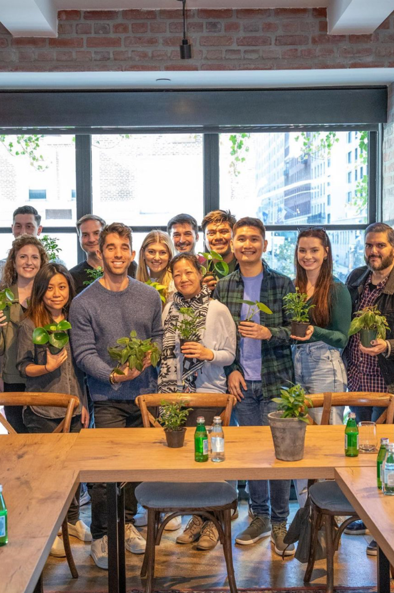

Transparencia

Creemos en la honestidad y la apertura en todas nuestras interacciones, y nos esforzamos por proporcionar información clara y precisa sobre nuestros productos y servicios.
Somos un equipo de desarrollo de huertos verticales apasionados por la agricultura sostenible y la tecnología innovadora. Estamos comprometidos en encontrar formas creativas de cultivar alimentos en entornos urbanos limitados utilizando espacios verticales.
Nuestra visión es crear un mundo donde la agricultura sostenible y los huertos verticales sean una parte integral de la vida urbana.

La innovación de nuestro equipo radica en combinar la tecnología de cultivo sin tierra con el diseño creativo de huertos verticales para maximizar el uso del espacio y los recursos en entornos urbanos.

Creemos en la honestidad y la apertura en todas nuestras interacciones, y nos esforzamos por proporcionar información clara y precisa sobre nuestros productos y servicios.